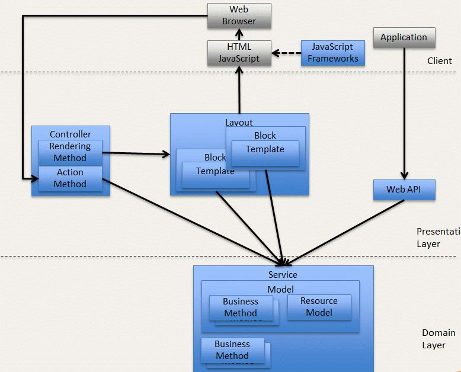

Extensibility Overview
What’s New
Here are the improvements we’ve made, or propose making.
-
Simplified workflow
-
Presentation, business logic, and data are distinctly separate
What’s New in the Presentation Layer
It’s easier to use, and cleanly separated from business logic.
-
Visual components can be edited by merchants using the Visual Design Editor
-
Templates now use Twig as a template engine
-
Controller routing is simplified
-
Templates now access only public methods
-
layout.xmlno longer includes actions -
Data dependencies among blocks: eliminated
-
Block metadata supports the use of tools such as visual editors
-
“Data sources”
-
“Twig templating”
What’s New in Services
-
Services are new.
-
There used to be several ways of getting data into a block or extension. In this model, you get your extension’s data from a service. A service formally defines data types in a schema. [etc. + more bullets]
Architecture

Workflow: Creating Blocks and Extensions
You create a service to provide your extension’s data, a template to configure its appearance,
Creating the Service That Serves Data to Your Extension
You can modify an existing service, such as the product service. You could use the data returned by the product service to populate, say, a product detail page.
[Link to ref doc, github source, of https://wiki.corp.x.com/display/MDS/Product+Service+Schema+Definitions]
Creating the Template for Your Extension
As with the service, you can start by modifying an existing template. Here’s an example [__]
Here are some things you should know about using Twig.
Thing one
Thing two
Thing three
For full information, see Twig
Creating the Visual Component
The visual component takes its appearance from the the template, its data from the service, and other configuration from config.xml. Here’s an example of a config.xml file.
Modifying Your Extension’s Configuration
You use a config.xml file to set your extensions preferences for, for example, static and dynamic option lists.